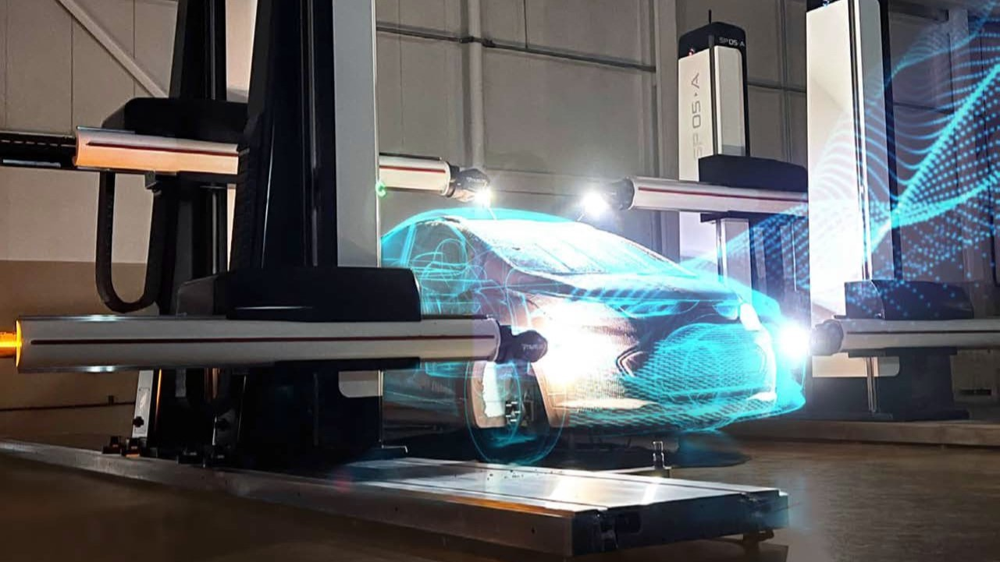

LCMT 5 AXIS Platform
X, Y, Z, A, and C axes can all move simultaneously to maintain tool orientation to the part surface.
1. Introduction
This guide provides specifications for developing a post-processor for the TarusNC control on a continuous 5-axis mill with a Fork-Style A/C Head. This information is based on the "3+2 & 5-Axis Milling Overview" and "Right Hand Rule" sections of this guide.
Note: This guide applies to both Gantry and Moving Table machine configurations, as the head kinematics remain the same. Developers must verify specific machine travel limits (e.g., max Z for safe retracts) for the target machine.
Post-Processor Test Kit
To ensure a rapid and successful post-processor deployment, provide the CAM vendor or developer with a "Post-Processor Test Kit." This kit is typically a .zip file containing:
- A simple 3D CAD model: A small test block or representative part with features relevant to the machine (e.g., angled holes, sloped surfaces).
- A proven .NC program: A G-code file that has been verified to run successfully on the target machine to cut that exact CAD model.
This allows the developer to program the part, generate code, and compare their output to a "known good" file, dramatically speeding up debugging.
2. Core Programming Logic & Tolerances
Continuous 5-Axis Milling Overview
This is different than "3+2" milling. When performing 5 axis machining, the X Y Z A & C axes are continuously moving, positioning the tool relative to the surface it is machining.
Careful programming with extensive collision control capabilities must be used when creating these types of toolpaths.
Toolpath Tolerance Recommendations for TarusNC
The TarusNC control, designed for high-speed contouring, excels with finely detailed toolpaths. To maximize surface finish quality, adhere to these guidelines:
Chordal Deviation (Tolerance)
For final finish cuts, limit chordal deviation to a maximum of 0.0100 inches (0.0004 millimeters). This tight tolerance ensures accurate reproduction of the intended surface.
Point Distribution (Point Density)
On finish toolpaths, enable "insert extra points" or equivalent settings to maintain a maximum spacing of 0.200 inches (5 millimeters) between points. This high point density provides smooth, continuous motion.
Implementation and Impact
Adjust CAD/CAM settings to generate toolpaths that meet these specifications. Using these recommendations will significantly improve surface finish quality. Failure to adhere to these tolerances and point density values can result in unsatisfactory surface quality and finish.
Positioning Mode (Machine vs. Part)
The control operates in two primary coordinate modes. The post-processor must be configured to output code for the "Part Coordinate System" by default.
- Part Coordinate System (
G54-G59): This is the default mode for all G-code programs. AllX,Y, andZcoordinates in a standardG00orG01block are interpreted as absolute positions relative to the active work offset (e.g.,G54), which is set by the operator. The post-processor must output all motion in this "Part" coordinate system. - Machine Coordinate System (
G53/G500): This is the absolute machine position. Moves in this system ignore all work offsets. This is only used for non-cutting moves, such as sending the machine to a safe home or tool change position.
3. File Structure & Formatting
The TarusNC control is compatible with various CAD/CAM systems, utilizing standard ISO G-code programming. Toolpath programs can be saved with either a .CNC or .NC file extension.
Program Structure
Line Numbering
- Each executable line (non-comment) must begin with an uppercase
Nfollowed by a sequential number (e.g.,N0001,N0002). - Number lines consecutively in increments of one, without gaps or "wrap-around" (do not restart numbering after
N9999).
Code Format
- Following the
Nand sequence number, include the G, M, T, or W code, along with relevant operation numbers and parameters. - Place each G or M code on its own line. Do not combine multiple G or M codes on a single line.
- G, M, and T code numbers do not require a fixed length (e.g.,
G1,G100are both valid).
Program Termination
- End the program with
M05(spindle stop) followed byM30(program end).
Parameter Handling
- Initial Values: All parameters default to zero.
- Modal Behavior: Parameters are modal, meaning they remain active until explicitly changed.
Modal Programming Considerations
While TarusNC supports modal G-code commands (where settings remain active until changed), explicit programming is strongly recommended for clarity and debugging.
- Explicit Parameter Specification: Include all relevant parameters for each G-code on every line. This eliminates ambiguity and simplifies troubleshooting.
- Complete Line Definitions: Each line should contain the "N" line number, the G-code, and all necessary positional data (X, Y, Z, A, C, F, etc.). This makes the program self-explanatory and easier to analyze.
Comment Handling
- Comments can be initiated with a semicolon (
;), asterisk (*), or left parenthesis ((). - Parenthetical comments must be closed with a right parenthesis (
)). - Limit comment length to 255 characters.
- Comments following an
M01(optional program stop) command will be displayed as a message, prompting user interaction to continue. This is useful for operator instructions or prompts.
Filename and Directory Requirements
- Spaces or punctuation are not permitted. Use dashes (
-) if necessary (e.g.,My-New-File.NC). - Filenames must be concise and descriptive and in
lowercase. - Version numbers or dates are not permitted in filenames.
4. Kinematics & Transformations
Cartesian "Right Hand Rule" System
The direction an axis moves, and how all axes relate to each other on a machine tool is known as its “Cartesian Coordinate System”. On Tarus machines it is ALWAYS related to which way the cutter/spindle moves on the machine relative to the table or work piece.
The “Rule” for this that Tarus machines use is called the “Right Hand Rule”.
TRAORI
In the TarusNC control, TRAORI (Tool Rotary Axis Orientation) is always enabled. This constant activation allows for real-time compensation of machine inaccuracies, and maintains the validity of your defined tool, part, and head geometry parameters. If you use the G500 command to move the machine to a safe “Machine” position, remember that TRAORI is temporarily deactivated. You must explicitly re-enable TRAORI following the G500 command to restore the necessary compensation and parameter functionality.
TRAORI / RTCP (Rotation around Tool Center Point) = ON
This is how the machine will move with TRAORI active:


"3+2” & continuous “5-axis” toolpaths created for 5-axis milling machines will automatically have the tool length and head rotations calculated by the CNC control during each move of an NC block.
TRAFOOF
TarusNC programming utilizes TRAFOOF, G500, D0, and a safe position move within the Machine Coordinate System (MCS) as a safety action within the toolpath, deactivating transformations and frames. This sequence is standard for safety. If this safety sequence is used at the end of the toolpath, a recovery sequence is needed: TRAORI, G54, D1, M05, and M30 to restore tool orientation, select the Part Coordinate System, recall tool data, stop the spindle, and terminate the program, respectively.
Detailed Explanation:
- Purpose: To disable active transformations, like those used for 5-axis machining.
- Function: Reverts the active coordinate system to the MCS.
- Application: Used for safety before tool changes or to reset after complex movements.
- Example: In 5-axis,
TRAFOOFcancels the tool tip coordinate transformation, returning control to MCS based movements. - Related Commands: Used with transformation commands like
TRAORI.
TRAFOOF / RTCP = OFF
This is how the machine will move with transformations disabled (e.g., when jogging in Machine mode):


5. Tooling & Compensation Logic
Tool Length and Presetting Tools
At the CNC control, the operator must set up his Tool Selector settings for a particular cutter with AT LEAST the following parameters:
- Tool Length - To the Tip of Tool
- Corner Radius - The Corner Radius of the ballnose/bullnose cutter.
These settings apply to ALL Ballnose and Bullnose cutters. Flat Endmill cutters do not need the "Corner Radius" parameter set (Corner Radius = 0).
There is NO Corner Radius parameter found in the Tool Manager for a Ballnose cutter. The CNC software allows for the radius of the ball automatically in the tool length parameter. A Flat Endmill will have a 0 in the Corner Radius field if it has a sharp/square corner.
Once the tool is installed in the spindle and the Tool Length has been calculated, the machine can be preset to the workpiece.
After presetting the tool is complete, the program can now be loaded into the CNC and executed.

Reference: "Ballnose Cutter" and "Bullnose Cutter" programming logic (millingoverview5axis.jpeg)
Standard methods of programming for these types of cutters are:
- Ballnose Cutters: Programmed & Preset to "Center of Ball"
- Bullnose Cutters: Programmed & Preset to "Center of Radius"
- Flat Endmill Cutters: Programmed & Preset to "Tip of Tool"
6. Supported G Codes
Siemens Specific G-Codes & Transformations
| Code | Description |
|---|---|
TRAORI | Enables RTCP, machine compensation, and tool data. |
TRAFOOF | Disables RTCP, machine compensation, and tool data. |
G54 | Activates Work Coordinate System 1. |
G500 | Activates Machine Coordinate System. |
D0 | Deactivates tool length compensation. |
D1 | Activates tool length compensation. |
G4 | Pauses execution for the specified time (F parameter). |
Standard Primary Motion
| Code | Description | Parameters |
|---|---|---|
G00 | Point to Point Execute (Rapid) | X, Y, Z, A, B, C (End Points) |
G01 | Point to Point Execute (Feedrate) | X, Y, Z, A, B, C (End Points), F (Feedrate) |
G02 | Clockwise Circle | X, Y, Z (End Points), I, J (Incremental Center), F (Feedrate) |
G03 | Counter Clockwise Circle | X, Y, Z (End Points), I, J (Incremental Center), F (Feedrate) |
G500 | Machine Coordinate System | Note: Using different coordinate systems within TarusNC changes the part offsets, but those offsets are always applied to the G54 coordinate system within the Sinumerik control. |
G54 | Part Coordinate System | See note on G500. |
G70 | Scale - Inch | |
G71 | Scale - Millimeter | |
G621-G626 | Go to User Clearance Position | F (Feedrate). G621 (X), G622 (Y), G623 (Z), G624 (A), G625 (B), G626 (C). After any of these G Codes it will clear the modal position of the respective axis. |
7. Supported M Codes
| Code | Description | Parameters |
|---|---|---|
M00 | Program Stop | |
M01 | Optional Stop/Program Pause | Displays comments after stop. |
M03 | Spindle On CW | S# = RPM |
M04 | Spindle On CCW | S# = RPM |
M05 | Spindle Off | |
M06 | Tool Change | T# = Tool number in Tool Selector |
M07 | Air On | |
M08 | Coolant On | |
M09 | Air and Coolant Off | |
M16 | Tool Change (Gundrill Only) | T# = Tool number in Tool Selector |
M18 | Gundrill Oil Off | Only works with G81 |
M52 | Through Spindle Coolant On | |
M53 | Through Spindle Coolant Off | |
M104 | Tool Frame On | |
M105 | Tool Frame Off | Part Frame On |
M106 | Start Timer | |
M107 | Wait for Timer |
8. Example Programs
Example 3 Axis Milling (TRAORI, PCS)
This example file provides a template for configuring your CAD/CAM postprocessor to generate accurate toolpaths for a TarusNC control, specifically for toolpaths that maintain TRAORI (Tool Rotary Axis Orientation) within the Part Coordinate System.
N0001;TARUSNC PROCESSED
N0002; ******** TOOL CHANGE *********
N0003; T0007 40-201 FLAT CUTTER D20 - MANU: D=20 L=110 ANGLE=0
N0004; TOOL LENGTH REFERENCE=TIP
N0005G71
N0006M6T7
N0007M3S2387
N0008 TRAORI
N0009G54
N0010G0X-132.0677Y-146.2150
N0011G0X-132.0677Y-146.2150A0C0
N0012G0X-132.0677Y-146.2150Z150
N0013; ***** 1. TOOL PATH ******
N0014; JOB COMMENT :
N0015; LAYER NAME :
N0016; WALL THICKNESS=0.00 OFFSET=0.00 OPERATION = MCONT TIP
N0017; SILHOUETTE BLANK VERTICAL
N0018G0X-132.0677Y-146.2150Z100A0C0
N0019G1X-132.0677Y-146.2150Z100A0C0F6000
N0020X-131.4785Y-145.5717Z100A0C0F6000
N0021X-130.9475Y-144.8795Z100A0C0F6000
N0022X-130.4789Y-144.1436Z100A0C0F6000
N0023X-130.0762Y-143.3697Z100A0C0F6000
N0024X-129.7425Y-142.5637Z100A0C0F6000
N0025X39.7372Y-39.8724Z85.0922A0C0F6000
N0026X39.7081Y-39.6907Z85.1322A0C0F6000
N0027X39.6344Y-39.5236Z85.1778A0C0F6000
N0028X39.5207Y-39.3815Z85.2263A0C0F6000
N0029X38.4196Y-38.3231Z85.6354A0C0F6000
N0030G0X42.4459Y-42.3494Z106.8858A0C0
N0031X42.4459Y-42.3494Z150A0C0
N0032M5
N0033M30Example 3+2 Milling Program (TRAORI, PCS)
This example file provides a template for configuring your CAD/CAM postprocessor to generate accurate toolpaths for a TarusNC control, specifically for toolpaths that maintain TRAORI (Tool Rotary Axis Orientation) within the Part Coordinate System.
N0001;TARUSNC PROCESSED
N0002; ******** TOOL CHANGE *********
N0003; T0007 40-201 FLAT CUTTER D20 - MANU: D=20 L=110 ANGLE=0
N0004; TOOL LENGTH REFERENCE=TIP
N0005G71
N0006M6T7
N0007M3S2387
N0008 TRAORI
N0009G54
N0010G0X-132.0677Y-146.2150Z150
N0011X-132.0677Y-146.2150Z150A-45C0
N0012X-132.0677Y-146.2150Z150A-45C0
N0013; ***** 1. TOOL PATH ******
N0014; JOB COMMENT :
N0015; LAYER NAME :
N0016; WALL THICKNESS=0.00 OFFSET=0.00 OPERATION = MCONT TIP
N0017; SILHOUETTE BLANK VERTICAL
N0018G0X-132.0677Y-146.2150Z100A-45C0
N0019G1X-132.0677Y-146.2150Z100A-45C0F6000
N0020X-131.4785Y-145.5717Z100A-45C0F6000
N0021X-130.9475Y-144.8795Z100A-45C0F6000
N0022X-130.4789Y-144.1436Z100A-45C0F6000
N0023X-130.0762Y-143.3697Z100A-45C0F6000
N0024X-129.7425Y-142.5637Z100A-45C0F5730
N0025X39.7372Y-39.8724Z85.0922A-45C0F6000
N0026X39.7081Y-39.6907Z85.1322A-45C0F6000
N0027X39.6344Y-39.5236Z85.1778A-45C0F6000
N0028X39.5207Y-39.3815Z85.2263A-45C0F6000
N0029X38.4196Y-38.3231Z85.6354A-45C0F6000
N0030G0X42.4459Y-42.3494Z106.8858A-45C0
N0031X42.4459Y-42.3494Z150A-45C0
N0032M5
N0033M30Example 5 Axis Milling (TRAORI, PCS)
This example file provides a template for configuring your CAD/CAM postprocessor to generate accurate toolpaths for a TarusNC control, specifically for toolpaths that maintain TRAORI (Tool Rotary Axis Orientation) within the Part Coordinate System.
N0001;TARUSNC PROCESSED
N0002; ******** TOOL CHANGE *********
N0003; T0008 60-100 BALL CUTTER D10: D=10 L=75 ANGLE=0
N0004; TOOL LENGTH REFERENCE=CENTER
N0005G71
N0006M6T8
N0007M3S2387
N0008 TRAORI
N0009G54
N0010; ***** 15. TOOL PATH ******
N0011; JOB COMMENT : 5AX - SIMULTANOUS FINE ROUGHING REAR
N0012; LAYER NAME : 16 5AX - SIMULTANOUS FINE ROUGHING REAR
N0013; WALL THICKNESS=0.00 OFFSET=0.30 STEP=1.80 LACE CUT CENTER
N0014G0X75.7170Y91.7204Z114.9383A-12.4856C-25.0144
N0015X74.2884Y89.1971Z100.2212A-12.4856C-25.0144
N0016G1X73.8122Y88.3561Z95.3155A-12.4856C-25.0144F3724
N0017X74.6986Y88.6038Z94.9245A-12.4856C-25.0144F3724
N0018X75.6365Y88.8654Z94.5410A-12.4478C-25.1415F3724
N0019X76.5921Y89.1307Z94.2100A-12.3344C-25.5225F3724
N0020X77.5623Y89.3989Z93.9324A-12.1455C-26.1574F3724
N0021X78.5442Y89.6694Z93.7089A-11.8811C-27.0462F3724
N0022X79.5343Y89.9413Z93.5400A-11.5410C-28.1888F3724
N0023X-74.0950Y125.1899Z88.8888A-17.9047C-14.0920F3724
N0024X-75.0831Y124.9479Z89.1233A-17.9288C-14.1802F3724
N0025X-76.0627Y124.7235Z89.4090A-17.9461C-14.2432F3724
N0026X-77.0313Y124.5172Z89.7451A-17.9564C-14.2810F3724
N0027X-77.9861Y124.3297Z90.1306A-17.9599C-14.2936F3724
N0028X-78.8905Y124.1597Z90.5221A-17.9599C-14.2936F3724
N0029G0X-77.4243Y130.1080Z109.5606A-17.9599C-14.2936
N0030X-77.4243Y130.1080Z150A-17.9599C-14.2936
N0031M5
N0032M30Example 3 Axis Milling (TRAFOOF, G500, D0)
This template configures a CAD/CAM postprocessor for TarusNC controls, demonstrating safe machine pre/post-positioning within the MCS. The procedure uses TRAFOOF, G500, and D0 to disable TRAORI, select the MCS, and cancel tool length compensation, respectively. A safe MCS position move follows. The recovery sequence (TRAORI, G54, D1, M03/M05, M30) is consistent across operation transitions and program completion.
N0001;TARUSNC PROCESSED
N0002; PP-NAME: SINUMERIK 1 PP FILE: D:\ ACCEPTANCE5006.NC
N0003G71
N0004 TRAFOOF
N0005G500
N0006 D0
N0007G0Z-10
N0008G0Z-10A0C0
N0009; ******* TOOL CHANGE *********
N0010; T0007 40-201 FLAT CUTTER D20 TOOL LENGTH REFERENCE=TIP
N0011M0
N0012M6T7
N0013 D0
N0014G0Z-10
N0015G0Z-10
N0016M3S2387
N0017 TRAORI
N0018G54
N0019 D1
N0020G0X-132.0677Y-146.2150
N0021G0X-132.0677Y-146.2150
N0022G0X-132.0677Y-146.2150Z150
N0023; ***** 1. TOOL PATH ******
N0024G0X-132.0677Y-146.2150Z100A0C0
N0025G1X-132.0677Y-146.2150Z100A0C0F6000
N0026X-131.4785Y-145.5717Z100A0C0F6000
N0027X-145.5691Y-131.4857Z100A0C0F6000
N0028X-146.2122Y-132.0752Z100A0C0F6000
N0029G0X-146.2122Y-132.0752Z150A0C0
N0030 TRAFOOF
N0031G500
N0032 D0
N0033G0Z-10F6000
N0034G0Z-10
N0035 TRAORI
N0036G54
N0037 D1
N0038M5
N0039M30Example 3+2 Milling Program (TRAFOOF, G500, D0)
This template configures a CAD/CAM postprocessor for TarusNC controls, demonstrating safe machine pre/post-positioning within the MCS. The procedure uses TRAFOOF, G500, and D0 to disable TRAORI, select the MCS, and cancel tool length compensation, respectively. A safe MCS position move follows. The recovery sequence (TRAORI, G54, D1, M03/M05, M30) is consistent across operation transitions and program completion.
N0001;TARUSNC PROCESSED
N0002; PP-NAME: SINUMERIK 1 PP FILE: D:\ ACCEPTANCE5006.NC
N0003G71
N0004 TRAFOOF
N0005G500
N0006 D0
N0007G0Z-10
N0008G0Z-10A0C0
N0009; ******* TOOL CHANGE *********
N0010; T0007 40-201 FLAT CUTTER D20 TOOL LENGTH REFERENCE=TIP
N0011M0
N0012M6T7
N0013 D0
N0014G0Z-10
N0015G0Z-10A-45
N0016M3S2387
N0017 TRAORI
N0018G54
N0019 D1
N0020G0X-132.0677Y-146.2150
N0021G0X-132.0677Y-146.2150
N0022G0X-132.0677Y-146.2150Z150
N0023; ***** 1. TOOL PATH ******
N0024G0X-132.0677Y-146.2150Z100A-45C0
N0025G1X-132.0677Y-146.2150Z100A-45C0F6000
N0026X-131.4785Y-145.5717Z100A-45C0F6000
N0027X-145.5691Y-131.4857Z100A-45C0F6000
N0028X-146.2122Y-132.0752Z100A-45C0F6000
N0029G0X-146.2122Y-132.0752Z150A-45C0
N0030 TRAFOOF
N0031G500
N0032 D0
N0033G0Z-10F6000
N0034G0Z-10A0
N0035 TRAORI
N0036G54
N0037 D1
N0038M5
N0039M30Example 5 Axis Milling (TRAFOOF, G500, D0)
This template configures a CAD/CAM postprocessor for TarusNC controls, demonstrating safe machine pre/post-positioning within the MCS. The procedure uses TRAFOOF, G500, and D0 to disable TRAORI, select the MCS, and cancel tool length compensation, respectively. A safe MCS position move follows. The recovery sequence (TRAORI, G54, D1, M03/M05, M30) is consistent across operation transitions and program completion.
N0001;TARUSNC PROCESSED
N0002; PP-NAME: SINUMERIK 1 PP FILE: D:\ ACCEPTANCE5006.NC
N0003G71
N0004 TRAFOOF
N0005G500
N0006 D0
N0007G0Z-10
N0008G0Z-10A-12.4856C-25.0144
N0009 TRAORI
N0010G54
N0011 D1
N0012G0X75.7170Y91.7204
N0013G0X75.7170Y91.7204
N0014G0X75.7170Y91.7204Z157.7559
N0015; ***** 15. TOOL PATH ******
N0016G0X75.7170Y91.7204Z114.9383A-12.4856C-25.0144
N0017X74.2884Y89.1971Z100.2212A-12.4856C-25.0144
N0018G1X73.8122Y88.3561Z95.3155A-12.4856C-25.0144F6000
N0019X74.6986Y88.6038Z94.9245A-12.4856C-25.0144F6000
N0020X75.6365Y88.8654Z94.5410A-12.4478C-25.1415F6000
N0021X76.5921Y89.1307Z94.2100A-12.3344C-25.5225F6000
N0022X77.5623Y89.3989Z93.9324A-12.1455C-26.1574F6000
N0023X-76.0627Y124.7235Z89.4090A-17.9461C-14.2432F6000
N0024X-77.0313Y124.5172Z89.7451A-17.9564C-14.2810F6000
N0025X-77.9861Y124.3297Z90.1306A-17.9599C-14.2936F6000
N0026X-78.8905Y124.1597Z90.5221A-17.9599C-14.2936F6000
N0027G0X-77.4243Y130.1080Z109.5606A-17.9599C-14.2936
N0028X-77.4243Y130.1080Z157.0704A-17.9599C-14.2936
N0029 TRAFOOF
N0030G500
N0031 D0
N0032G0Z-10F6000
N0033G0Z-10A0C0
N0034 TRAORI
N0035G54
N0036 D1
N0037M5
N0038M30